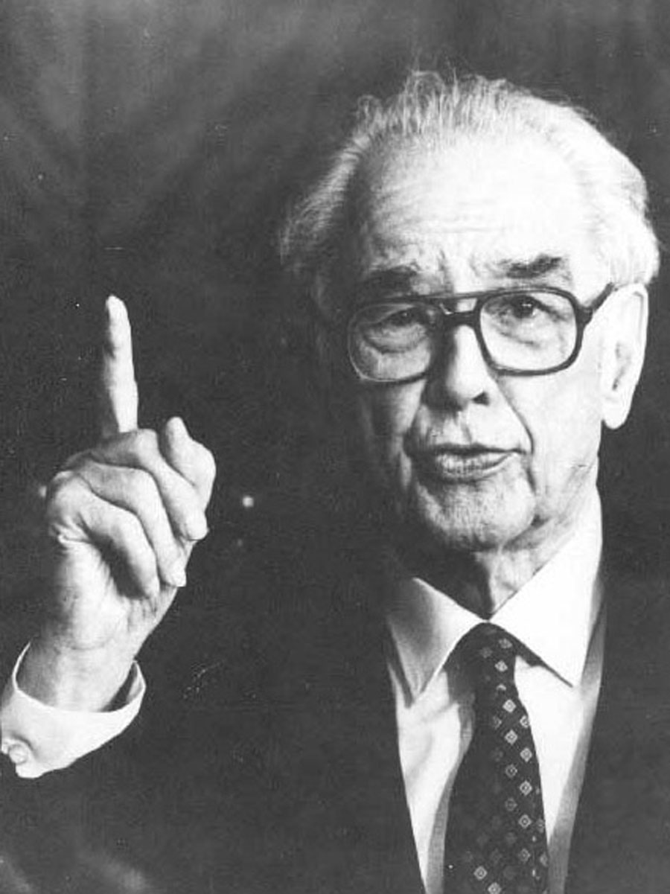

Джон Атанасов в България
- Джон Атанасов посещава България два пъти.
- През 1970 г. Джон Атанасов е поканен в България от БАН и му е връчен орден "Кирил и Методий" – първа степен.
- През 1985 г. е второто му посещение, при което е награден с орден „Народна Република България“ — първа степен.